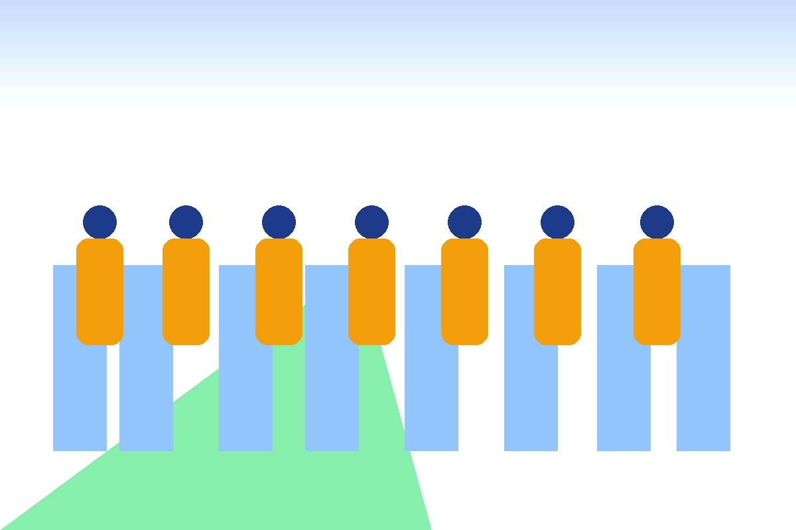

Scambio Intergenerazionale
Colleghiamo la memoria e il futuro a Bari
La Banca del Tempo permette ai lavoratori in pensione di mettere a disposizione la propria esperienza lavorativa e umana per i giovani.
1.480
Ore Erogate sul Territorio
ACLI Ceglie del Campo (Bari)

Uniamo le generazioni
Costruiamo insieme una comunità basata sulla condivisione delle competenze, il dialogo e il supporto reciproco.
Le Nostre Aree di Insegnamento
Scopri le discipline pratiche e teoriche offerte dai nostri docenti in pensione.
Catalogo Docenti & Mentori
Esplora le biografie certificate ed effettua una prenotazione di ore.
Dashboard & Calcolatore Ore
Totale Ore Disponibili340 Ore
Il Tuo Saldo Tempo12 Ore
Settore Più RichiestoAgricoltura
Le Tue Prenotazioni Programmate
| Docente | Materia/Mestiere | Ore | Stato |
|---|
Sostieni la Banca del Tempo
La donazione economica è completamente libera, priva di massimali e NON obbligatoria.
ACLI Master App - Back-End
Inserisci il Codice di Identificazione Master per abilitare l'inserimento di nuovi docenti.
Operatore Autenticato